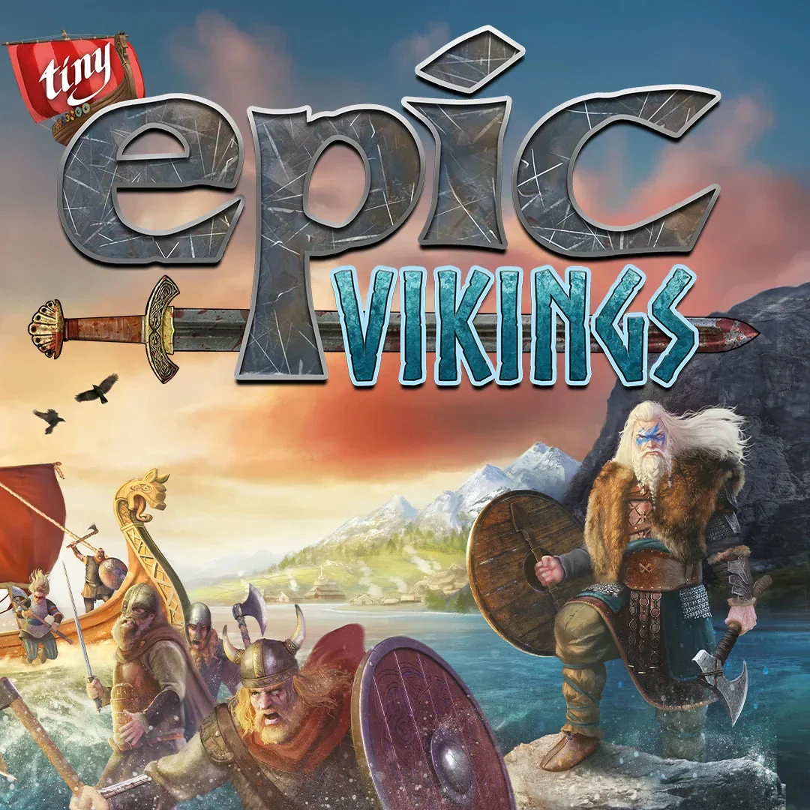
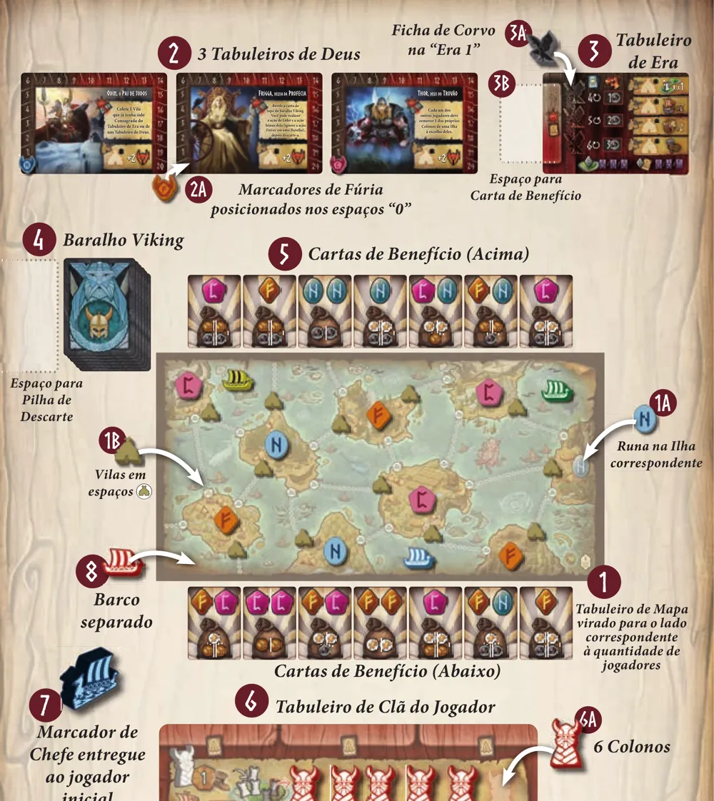
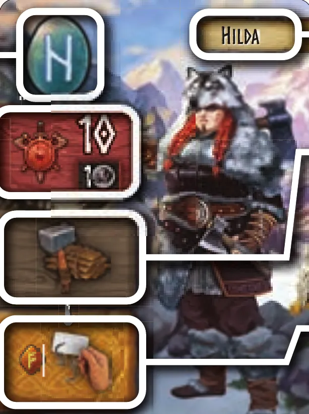
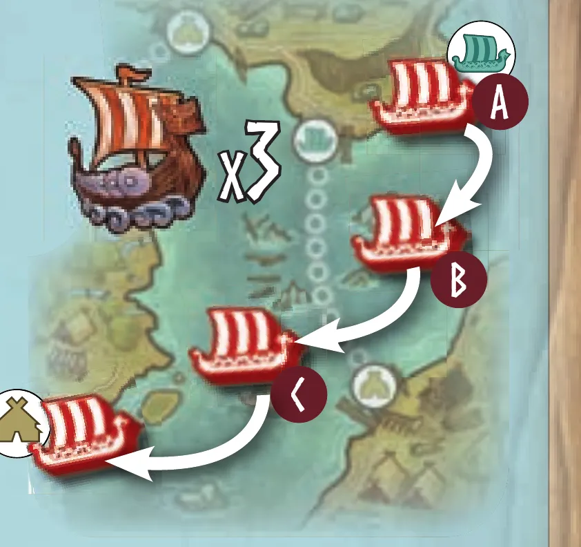
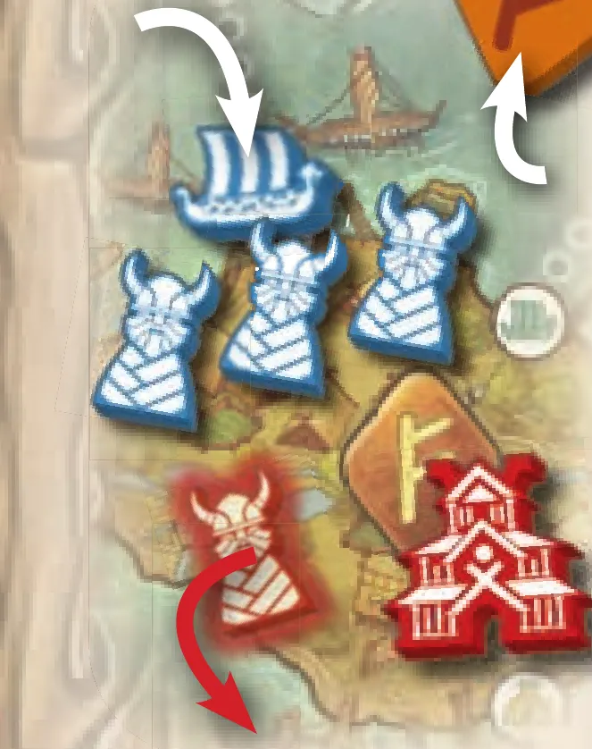
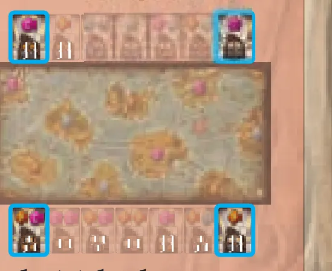
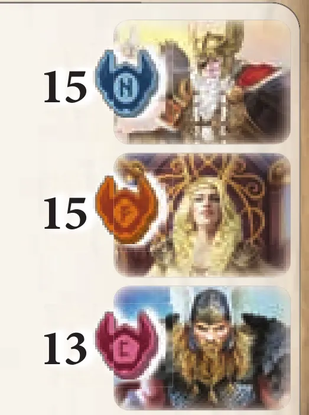

Imagem: Gamelyn Games · edição DeluxeControle de área · Seleção de cartas
Como jogar Tiny Epic Vikings
Para quem nunca jogou1 a 4 jogadores30 a 60 min14+Edição Asmodee (Galápagos)
· Redação Elite Boardgamers
Resumo em 1 minuto
Você escolhe Cartas Viking a cada era, ocupa Ilhas com Colonos, Barcos e Templos para controlar as Runas delas e luta por Cartas de Benefício; vence quem somar mais pontos com as Runas, que valem mais quanto maior a Fúria do deus de cada uma.
Em cada uma das 3 eras você monta uma mão de Cartas Viking e joga uma por turno: para cima, faz a ação dela; para baixo, entra numa batalha.
Quem tem a maior Influência numa Ilha (Colono 1, Templo 4, Barco na Doca 2) e pelo menos um Colono ou Templo ali controla a Runa dela.
No fim, cada Runa de Ilha vale 6, 5 ou 4 pontos e cada Runa de Carta de Benefício vale 5, 4 ou 3, conforme a posição do deus dela na Fúria.
Como você aprende: 5 etapas, da mesa montada à contagem de pontosLeitura do essencial: cerca de 14 min
À vista, só o essencial para jogar. O que abre com + é explicação, exemplo, exercício ou regra de caso especial: abra quando precisar.
Comece a jogar em 4 minutos

Imagem: Gamelyn Games
Meta: em 4 minutos de leitura, montar a mesa e jogar o seu primeiro turno sem abrir o manual.
A ideia do jogo
Você comanda um clã viking por 3 eras. Em cada era, monta uma mão de Cartas Viking e joga uma por turno: para fazer a ação dela no mapa ou para lutar numa batalha. No mapa, você leva Colonos para as Ilhas; quem tem mais força numa Ilha pega a Runa dela. No fim, cada Runa vale pontos, e vale mais a Runa do deus com mais Fúria.
Monte a mesa
Na ordem. O marcado (depois) se monta já e se usa mais tarde.
Tabuleiro de Mapa no centro, no lado com o ícone do seu número de jogadores; 1 Runa em cada Ilha, no tipo do ícone; 1 Vila em cada espaço de Vila (depois)p. 4.
3 Tabuleiros de Deus sorteados acima do mapa, cada um com 1 Marcador de Fúria sorteado no 0. O símbolo do marcador diz qual Runa é daquele deus (p. 4; o vínculo aparece nas figuras das p. 5, 13 e 15).
Tabuleiro de Era, lado do Corvo para cima, com o Corvo no 1; Cartas Viking embaralhadas num baralho p. 4.
Cartas de Benefício viradas para cima em duas fileiras, acima e abaixo do mapa: 4 por fileira com 2 jogadores, 5 com 3, 7 com 4 (depois)p. 4.
Cada jogador: Tabuleiro de Clã com 6 Colonos, 3 Barcos e 2 Templos nos espaços; 1 Barco separado; Madeira, Alimento e Aço no 2 p. 4.
Quem esteve numa ilha mais recentemente pega o Marcador de Chefe. A partir do jogador à direita dele, no sentido anti-horário, cada um põe o Barco separado num Fiorde vazio na borda do mapa p. 4.
Com 2 jogadores: com peças das 2 cores que sobraram, o inimigo põe 1 Templo e 2 Colonos em cada uma das 3 Ilhas que tocam a borda do mapa. As Runas ficam nas Ilhas, e a Fúria não sobe p. 16. A seleção de cartas também muda: veja "Situações especiais".
Seu primeiro turno
Antes, a Fase de Seleção de Cartas: na Era 1, cada um recebe 4 Cartas Viking, guarda 1 virada para baixo e passa o resto ao jogador seguinte no sentido horário, até todos terem 4 p. 7. Depois, a partir do Chefe e no sentido horário, cada um joga uma carta por turno, à direita das que já jogou p. 8:
Virada para cima: faça a Ação de Líder e, se tiver as Runas pedidas, a Ação Rúnica p. 10.
Ou virada para baixo: você começa uma batalha ou entra na que está aberta (etapa 4).
Jogar uma carta é obrigatório; fazer a ação, não p. 10. As Ações de Líder p. 11 e 12:
Velejar xN: até N movimentos de um Barco, de Fiorde para Fiorde ou entre um Fiorde e uma Doca, a bolinha branca na beira de uma Ilha. Atracado, pague 1 Alimento por Colono e envie até N Colonos à Ilha.
Explorar xN: mova Colonos seus de Ilha em Ilha pelas linhas pontilhadas, N passos ao todo.
Colher xN: receba N recursos à sua escolha (máximo 7 de cada).
Construir: pague Madeira e leve um Barco ou Templo ao mapa (etapa 2).
Ainda não precisa saber
Custos de Construir e bônus do Colher: etapa 2. Colonos de outro clã na Ilha, Invadir e Consagrar Vilas: etapa 3. Como tomar a Runa de outro jogador: etapa 3. Batalhas: etapa 4. Fim da era e pontuação: etapa 5.
Como a partida acaba
Depois da Era 3, cada Runa de Ilha que você controla vale 6, 5 ou 4 Pontos de Vitória, e cada Runa das suas Cartas de Benefício vale 5, 4 ou 3, conforme o deus dela tenha a maior, a segunda ou a terceira Fúria. Vence quem fizer mais pontos p. 15.
Prefere ver? Um resumo de partida em vídeo. Ele complementa este guia; em caso de diferença, vale o manual.
TINY EPIC VIKINGS - Gameplay resumida, canal Duque Board Games · abrir no YouTube
0Antes de tudo: o que é este jogoOpcional
Imagem: Gamelyn GamesAbrir esta seção
Tiny Epic Vikings é um jogo de controle de ilhas com seleção de cartas. A partida tem 3 eras, e cada era tem três fases: escolher cartas, jogá-las e limpar a mesa p. 6. As cartas são os líderes do seu clã: jogada para cima, uma carta move as suas peças no mapa; jogada para baixo, luta por uma Carta de Benefício p. 8. No mapa, quem tem a maior Influência numa Ilha, com os pés no chão, controla a Runa dela p. 13.
Duas ideias sustentam o resto:
Os pontos dependem dos deuses. Cada Runa pertence a um deus. Na contagem final, o deus com mais Fúria faz as suas Runas valerem mais p. 15. A Fúria sobe quando alguém toma uma Runa de Ilha, quando alguém perde uma batalha e quando alguém consagra uma Vila a um deus p. 9, 13 e 14.
Perder uma batalha também rende. Quem perde pode fazer a Bênção de Valhala do deus da sua carta e aumenta a Fúria dele p. 9.
1Como este guia ensinaOpcional
Imagem: Gamelyn GamesAbrir esta seção
Cinco etapas, na ordem em que você precisa delas: mesa; cartas e turno; mapa; batalhas; fim da era e pontuação. Cada uma traz Para entender, o Passo a passo com a página do manual, as regras menos comuns a um toque, um exemplo resolvido, uma tarefa para completar e uma sua vez, sem ajuda. Toque numa opção para ver a resposta e a explicação. No fim, uma avaliação diz o que reler, e uma folha de consulta vai para a mesa.
2Etapa 1: montar a mesa
Por que funciona assim

A mesa de uma partida de 4 jogadores: os 3 deuses com o Marcador de Fúria no 0, o Tabuleiro de Era com o Corvo na Era 1, o Baralho Viking, 7 Cartas de Benefício acima e 7 abaixo do mapa, uma Runa em cada Ilha, as Vilas nos seus espaços e o Barco separado indo para um Fiorde da borda. Ilustração: manual Asmodee p. 5Regra adicional: Partida de 2 jogadores: o inimigoPratique esta etapa: exercícios com respostas
3Etapa 2: escolher cartas e jogar um turno
Por que funciona assim

Uma Carta Viking: no alto, a Runa Ativa; abaixo, a Força 10, com custo de 1 Aço para usá-la em batalha; depois, a Ação de Líder (Construir); embaixo, a Ação Rúnica, que pede 1 Runa. Ilustração: manual Asmodee p. 7
As quatro Ações de Líder principais são Velejar um Barco, Explorar com um Colono, Colher e Construir p. 14. As duas primeiras mexem no mapa e ficam para a etapa 3. As outras duas cuidam de recursos e peças:
Regra adicional: As ações rúnicas extrasSobre a ediçãoVer um exemplo resolvidoPratique esta etapa: exercícios com respostas
4Etapa 3: o mapa: Velejar, Colonos, Influência e Vilas
Por que funciona assim

Um Velejar x3: o Barco sai da Doca para um Fiorde (A), passa para o Fiorde vizinho (B) e entra numa Doca (C), que tem uma Vila. Ilustração: manual Asmodee p. 11Sobre a edição

O roubo do exemplo do manual: o jogador azul atraca e envia 3 Colonos; o Colono vermelho sai, e o azul soma 5 de Influência (3 Colonos e o Barco na Doca) contra 4 do Templo vermelho, então leva a Runa. Ilustração: manual Asmodee p. 13Sobre a ediçãoRegra adicional: Devolver ColonosVer um exemplo resolvidoPratique esta etapa: exercícios com respostas
5Etapa 4: batalhas
Por que funciona assim

As quatro Cartas de Benefício que podem ser escolhidas ao começar uma batalha: as das pontas da fileira de cima e da fileira de baixo. Ilustração: manual Asmodee p. 8Regra adicional: O guerreiro solitário: os InvasoresRegra adicional: Batalha no último turno da eraRegra adicional: Quarta Carta de BenefícioRegra adicional: Entrar em uma Batalha (Ação Rúnica)Sobre a edição
As Bênçãos de Valhala estão impressas em cada Tabuleiro de Deus p. 2:
Deus
Bênção de Valhala
Odin
Colete 1 Vila já consagrada do Tabuleiro de Era ou de um Tabuleiro de Deus
Frigga
Revele a carta do topo do Baralho Viking; você pode fazer a Ação de Líder e a ação bônus dela (ignore Entrar em uma Batalha); depois descarte-a
Thor
Cada outro jogador remove 1 Colono seu de uma Ilha à escolha dele
Freia
Mova 1 Colono seu do Tabuleiro de Clã ou de uma Ilha para outra Ilha à sua escolha
Sif
Colete 4 recursos quaisquer
Njord
Velejar com cada um dos seus Barcos até 2 vezes; atracados, eles não invadem Vilas, mas podem enviar Colonos
Regra adicional: Fúria acima de 20Ver um exemplo resolvidoPratique esta etapa: exercícios com respostas
6Etapa 5: fim da era e pontuação
Por que funciona assim

Fim de uma partida: Odin e Frigga empatados com 15 de Fúria e Thor com 13. Pelo empate, as Runas de Odin e Frigga valem o valor do 2º lugar, e as de Thor, o do 3º. Ilustração: manual Asmodee p. 15Ver um exemplo resolvidoDicaPratique esta etapa: exercícios com respostas
7Situações especiaisOpcional
Imagem: Gamelyn GamesAbrir esta seção
A seleção de cartas com 2 jogadores. O inimigo recebe uma mão virada para baixo com uma carta a menos que a da era e fica "sentado" entre os dois jogadores. Vocês passam cartas para ele e pegam as dele, na direção da era. Depois de cada passada, embaralhe a mão do inimigo e descarte 1 carta dela; no fim, descarte a última p. 16. Na Era 1, por exemplo, cada jogador recebe 4 cartas e o inimigo, 3. O exemplo do manual p. 16: o Jogador A guarda 1, passa 3 ao inimigo e pega as 3 que o Jogador B passou; o Jogador B guarda 1, passa 3 ao Jogador A e pega as 3 do inimigo. Embaralhe a mão do inimigo (as 3 que vieram de A), descarte 1 e repita até que os dois estejam passando só uma carta.
Sobre a edição
Modo solo. O jogo tem um modo para 1 jogador contra o Clã Inimigo, com preparação e ações próprias (p. 16 a 23). Este guia não o cobre.
8Avaliação finalOpcional
Imagem: Gamelyn GamesAbrir esta seção
Responda sem consultar. Cada resposta diz o que reler.
1. Partida de 4 jogadores. Quantas Cartas de Benefício há em cada fileira?
7p. 4. Releia a etapa 1.
2. Na Era 3, quantas cartas você terá na mão final?
6: a era define quantas cartas cada um recebe, e você guarda todas, uma por vez p. 7. Releia a etapa 2.
3. Você quer construir seu primeiro Templo e tem 4 de Madeira. Pode?
Não. Os Templos custam 5 e 7 de Madeira p. 12. Releia a etapa 2.
4. Você tem 3 Colonos e um Barco na Doca de uma Ilha; o rival que a controla tem 1 Templo e nenhum Colono. Você rouba a Runa?
Sim: 3 + 2 = 5 contra 4, com pés no chão p. 13. Releia a etapa 3.
5. Quantas Vilas você pode consagrar num turno?
1 por turno p. 14. Releia a etapa 3.
6. Você perde uma batalha. O que é obrigatório?
A Bênção é opcional ("pode"); subir a Fúria é obrigatório ("deve") p. 9. Releia a etapa 4.
7. Você ganha a quarta Carta de Benefício. O que faz?
Você guarda no máximo 3 e devolve uma à ponta de uma das fileiras p. 9. Releia a etapa 4.
8. Fúria final: Odin 12, Thor 12, Frigga 7. Quanto vale uma Runa de Ilha de Odin?
Odin e Thor empatam em 1º e valem o valor do 2º: 5p. 15. Releia a etapa 5.
9Para consultar durante a partida
Imagem: Gamelyn Games
Preparação: mapa no lado do número de jogadores; 1 Runa por Ilha e Vilas nos espaços; 3 deuses com Fúria no 0; Corvo na Era 1; Cartas de Benefício em 2 fileiras (4, 5 ou 7 cada). Cada jogador: recursos no 2, 3 Barcos no tabuleiro e 1 num Fiorde da borda. Chefe: quem esteve numa ilha por último. Com 2 jogadores, o inimigo nas 3 Ilhas Periféricas.
Era: cartas 4, 5, 6; passe horário, anti-horário, horário.
Seu turno
Sua carta mais à direita está virada para baixo? Resolva a batalha.
Jogue uma carta: para baixo (batalha) ou para cima (Ação de Líder, depois Ação Rúnica se tiver as Runas).
Consagre 1 Vila, se quiser.
Ações de Líder
Velejar xN: N movimentos, um só Barco. Doca: 1 Barco só. Enviar Colonos: 1 Alimento cada, até N. Ataque: com mais Colonos que cada um, cada outro remove 1. Invadir no fim do movimento: Aço da era.
Explorar xN: Colonos pelas Rotas de Balsa; depois, ataque onde tiver maioria.
Colher xN: N recursos à escolha; +1 Alimento por Barco construído, +1 qualquer por Templo construído. Teto 7.
Construir: Barcos 2, 3, 4 de Madeira (Fiorde vizinho de região sua); Templos 5, 7 (Ilha com Colono seu, nunca os dois na mesma Ilha).
Influência: Colono 1, Templo 4, Barco na Doca 2, Barco no Fiorde 0. Controle: maior Influência e pés no chão (Colono ou Templo). Pegar Runa de Ilha: Fúria +1.
Batalha: quem começa escolhe a Carta de Benefício de uma ponta. Resolve no próximo turno dele. Pague o Aço ou fique de fora. Maior Força leva a carta e os recursos da bolsa (máximo 3 cartas). Perdedores: Bênção (opcional) e Fúria +1. Empate: todos perdem. Sozinho: contra os Invasores.
Consagrar: Tabuleiro de Era (faça a ação) ou Tabuleiro de Deus (Fúria +2). Pilha máxima = número de jogadores.
Limpeza: descarte as Cartas Viking (não as de Invasor); Corvo avança; Chefe para quem tem mais Runas de Ilha.
Pontos: Runa de Ilha 6, 5, 4; Runa de Carta de Benefício 5, 4, 3, pela posição do deus na Fúria. Empate de Fúria: vale a menor posição. Desempate: Runas de Ilha, Cartas de Benefício, Templos, Barcos, recursos.
10Fontes
Imagem: Gamelyn Games
Asmodee (Galápagos). Tiny Epic Vikings: Livro de Regras dos Invasores (edição brasileira, arquivo TNE051_regras_v1.0.pdf, 24 páginas, criado em 08/01/2024). Biblioteca de Downloads da Asmodee Brasil, https://www.asmodee.com.br/download-library. Consultado em 01/11/2026.
Duque Board Games. TINY EPIC VIKINGS - Gameplay resumida, YouTube, https://www.youtube.com/watch?v=eYwBVizR7oY. Consultado em 01/11/2026. Complementar; não foi usado como fonte de regra.
Não foram encontrados FAQ nem errata oficiais em português até 01/11/2026.
Regras conferidas no manual da edição brasileira da Asmodee (Galápagos), o "Livro de Regras dos Invasores" de Tiny Epic Vikings, arquivo TNE051_regras_v1.0, de 24 páginas. As páginas citadas são as desse manual. Este guia ensina o jogo de 2 a 4 pessoas; o modo solo tem regras próprias nas p. 16 a 23.